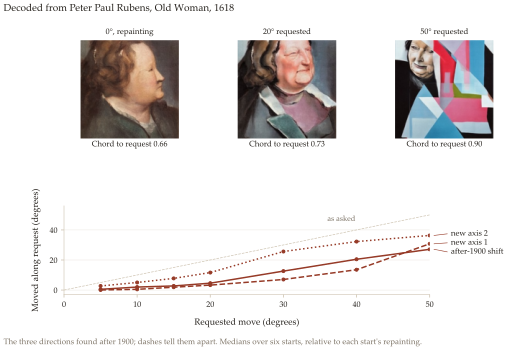
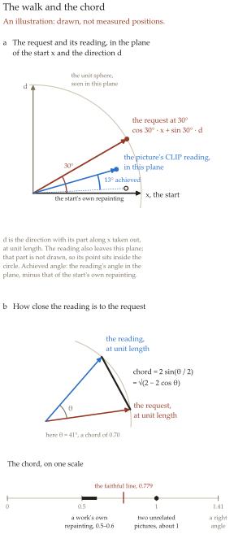
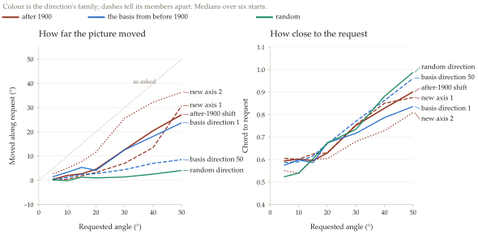

Q8 Does the decoder paint what we ask?
Q7 asks that a picture come back near what we asked for, so first: does the decoder paint what we ask? Say we take a painting’s CLIP vector, move it a little along one of the directions the corpus varies in, and ask a decoder to paint the moved vector. If the picture changes in the way we asked, the vector space is a place we can walk in and look at what we find, and if it does not, a search in it has nothing to look at. In short, the picture follows the move only part of the way, and mostly along the shift (the way the later works lean on average), its 2 axes and the corpus’s main direction.
We could search among the vectors alone, and Q6 does a version of that on the works’ own vectors. But a vector is not a work: the encoders score any point on the sphere, even one no picture maps to, so a far vector alone gives us nothing to look at and nothing to check. Once the vector is painted and read back, we can check whether it comes back near what we asked for, and whether it is still far when seen. The cost is that the decoder brings its own knowledge, so every painted result is partly a result about the decoder.1
- We use an image-variations decoder, a Stable Diffusion model trained to paint from a CLIP image vector alone, with no prompt and no source picture.234
- We start from 6 works, 4 from before 1900 and 2 after, and walk from each in a fixed direction, repainting at angles of 5 to 50 degrees on the sphere (2 typical works before 1900 sit about 58 degrees apart).5 The vector we hand the decoder at each angle is the request, i.e., what we asked for. It is the start turned by that angle toward the direction (Figure 2).6
- The directions: the Data pages’ shift after 1900 and its 2 axes (Q3), the corpus’s main direction before 1900 (the one its works vary most along), 2 minor directions before 1900, 2 random directions, and the line to the work’s 15th nearest neighbour.
- We read each picture back through CLIP and measure how far it moved along the direction, its achieved angle, and its fidelity (Q7), i.e., the chord between the reading and the request (about 0.5 to 0.6 for a work’s own repainting, about 1 for 2 unrelated pictures).7 Fidelity is what the faithful line reads: we hand the decoder a vector and only ever see a picture, so the picture speaks for the vector only when it comes back near it.


A. The decoder moves a picture along the shift, its 2 axes and the corpus’s main direction, part of the way, and barely along minor or random ones. Asked for 50 degrees along the shift or the 2 axes, the picture moves about 30, and along a minor or a random direction 9 or less (medians over 6 starts, one render each; Figure 3).89
B. Below about 30 degrees the picture lags well behind the direction we asked for, and past 30 it drifts from the request. At a 20-degree request it has moved about 5, 3 and 12 degrees along the shift and the 2 axes. By 50 its fidelity has drifted most of the way to the unrelated level.10
A and B are about the decoder, as CLIP reads its pictures: which moves of a vector it paints, and how large a move must be before the picture shows it. So DuROOM search draws its step (the angle between the vector it stands on and a vector it asks for) at a scale that starts at about 16 degrees and can widen to about 30, the point where B says the picture starts to drift (Q10).
As no step along the corpus’s own directions makes the picture follow the request closely, the search of Q10 restarts each round from where its pictures read back, i.e., where the decoder did paint and not where it was asked to.
We also notice that pictures along the shift and the 2 axes move away from the works before 1900 as the angle grows.11

Next, Q9 asks what simple requests give, with no search.
References
Footnotes
No date limit is stated for the images the decoder was trained on (Q10). With no search, repainting a work and re-reading it again and again moves it away from the works before 1900 (Q12). The controls of Q12 are there to tell the decoder’s own drift from what a search adds.↩︎
Lambda Labs’ Stable Diffusion image variations (Lambda Labs 2022; Rombach et al. 2022), at guidance 3 and 50 denoising steps, with one noise seed per picture and reseeds at 3 angles only. Each walk is rendered at its starting work’s own CLIP length (16.6 to 18.4 for the 6 starts). Doubling or halving the length changes the chord by at most 0.1 (2 starts, at 0 and 20 degrees along the shift).↩︎
We also tried unCLIP (Ramesh et al. 2022): on 256 works, each at its better guidance, the chord from a work to its repainting differs between the 2 decoders by only 0.01 to 0.03, where 2 noise seeds of 1 vector differ by about 0.5. We chose image variations as it lands slightly nearer at its best setting and needs no prompt. At the same guidance their order is not settled.↩︎
We have not run a search in the reference’s 64 leading directions, along which its works vary most. They keep 40% of a typical one of the 26 later works that are far and faithful (median), against 65% of a typical other work before 1900. It is 56% against 77% at 128 directions, 76% against 88% at 256.↩︎
The angles are 5, 10, 15, 20, 30, 40 and 50 degrees. Other tests painted farther: the lines toward later works go from 10 to 70 degrees (Q9). The search’s own requests go out to about 90 degrees (Q12).↩︎
Let x be the start’s CLIP vector at unit length, d the direction with its part along x taken out and set to unit length, and L the start’s own CLIP length. The request at angle t is
request(t) = (cos(t) * x + sin(t) * d) * L. So it sits exactly t degrees from the start, along d. It is the vector the decoder is given, and every request is kept with its picture.↩︎For 2 unit vectors a and b,
chord = sqrt(2 - 2 * cos(a, b)) = 2 * sin(angle / 2), so the chord and the angle put pictures in the same order. A right angle is a chord of 1.41.↩︎We have not tested why the decoder barely follows minor and random directions.↩︎
Repaintings of later works land farther from their own vectors than earlier works do, a median chord in CLIP of 0.581 for the 663 from 1970 on against 0.526 for the 593 from before 1900. We have not tested whether that comes from the decoder’s training images, from CLIP or from the corpus.↩︎
The faithful line is about 46 degrees, so a picture that did not move would pass it for any request within 46 degrees. This is why we read how far a picture moved apart from whether it passes the line. At 0 degrees 2 seeds of 1 vector differ in DINOv3 by 0.44 to 0.97, as much as a 30-degree step moves it (0.76 to 0.95), so the 30 is rough.↩︎
At 50 degrees the mean DINOv3 chord is 0.85 to 1.01 to the 15 nearest works before 1900 (0.64 to 0.74 at 10 degrees) and 0.49 to 0.68 to the 15 nearest of the whole corpus, no farther than random points in the corpus’s cone (0.70). This rests on 1 decoder and 3 directions per family. We say nothing about which decades they move toward.↩︎